Sistemul Solar este compus din:
Sistemul nostru Solar este compus din Soarele și toate obiectele care orbitează în jurul lui datorită
gravitației sale.
Soarele
Steaua din centrul Sistemului Solar.
Descriere
Este o sferă aproape perfectă din plasmă fierbinte, ținută de gravitație și modelată de un câmp
magnetic.
Vârsta Soarelui este de aprox. 4,6 miliarde de ani. În prezent, Soarele a încheiat aproximativ
jumătate din ciclul său principal de evoluție. Pe parcursul principalei sale etape de evoluție,
miezul de hidrogen al Soarelui se transformă în heliu prin fuziune nucleară. La fiecare
secundă, în nucleul Soarelui, peste patru milioane de tone de materie sunt convertite în
energie, generând astfel neutrinii și radiația solară.
Ciclul de viata al Soarelui
În aproximativ 5 miliarde de ani, Soarele se va transforma într-o gigantică roșie și apoi într-o
pitică albă, perioadă în care va da naștere unei nebuloase planetare. În cele din urmă îşi va
epuiza hidrogenul, ceea ce va duce la schimbări radicale, inclusiv la distrugerea totală a
Pământului. Activitatea solară, mai precis activitatea magnetică, produce un număr de
fenomene, inclusiv pete solare pe suprafața sa, explozii solare și variații ale vântului solar care
transportă materia în întreg Sistemul solar și chiar dincolo de el.
Soarele este format in cea mai mare parte din hidrogen și heliu. Rezervele de hidrogen
reprezintă aprox. .74 % , iar heliul aproximativ 25 % din compoziția Soarelui , în timp ce
restul este format din elemente mai grele, cum ar fi oxigen , și carbon .
CFormarea și evoluția Sistemului solar
Nașterea și evoluția Sistemului solar au generat multe teorii fanteziste în trecut. Chiar la
începutul erei științifice, sursa de energie a Soarelui și modul în care s-a format Sistemul solar
erau încă un mister. Cu toate acestea noile progrese din era spațială, descoperirea altor lumi similare
sistemului nostru solar, precum și progresele în domeniul fizicii nucleare, toate ne-au
ajutat să înțelegem mai bine procesele fundamentale care au loc în interiorul unei stele și
modul în care se formează stelele.
Explicația acceptată pentru modul în care s-a format Soarele și Sistemul solar (precum și alte
stele) a fost propus pentru prima dată în 1755 de Immanuel Kant și, independent de el, de
către Pierre-Simon Laplace. Conform acestei teorii, stelele se formează în nori mari si denși
de hidrogen molecular gazos. Acești nori sunt instabili gravitațional și colapsează în bulgări
mai denși si mai mici; în cazul Soarelui, aceasta este numită " nebuloasa solară"; bulgarii
denși inițiali colapsează apoi şi mai mult formând stele și un disc de materie în jurul lor, care
ar putea deveni în cele din urmă planete. Se poate ca nebuloasa solară să fi avut inițial
dimensiunea de 100 UA și o masă de 2-3 ori mai mare decât cea a Soarelui. În timp ce
nebuloasa colapsează din ce în ce mai mult, conservarea momentului cinetic a făcut ca
nebuloasa să se rotească mai repede, pe măsură ce ea se prăbușea și a dus la încălzirea
continuă a centrului nebuloasei. Acest lucru se întâmpla în urmă cu circa 4,6 miliarde de ani.
În general se consideră că Sistemul solar arată cu totul diferit astăzi faţă de momentul formării
sale.
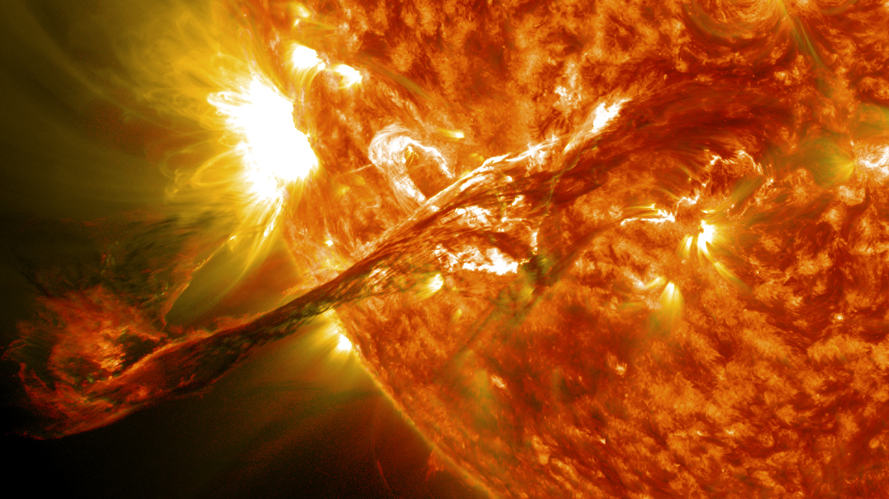
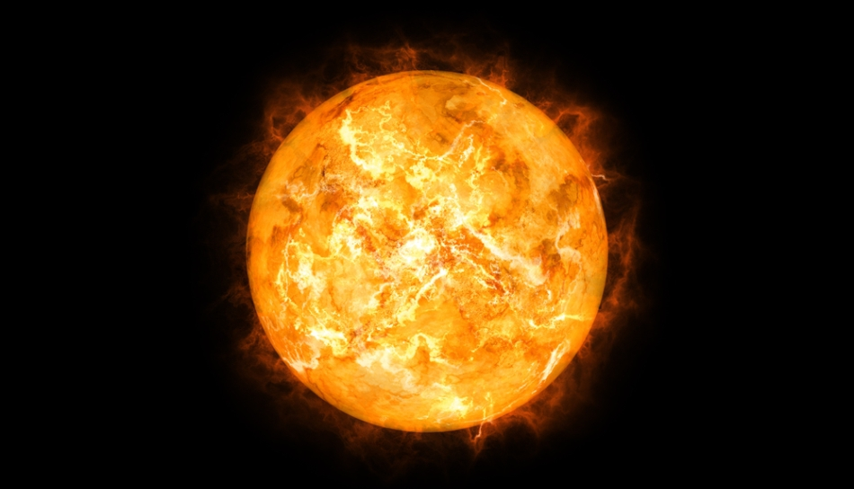
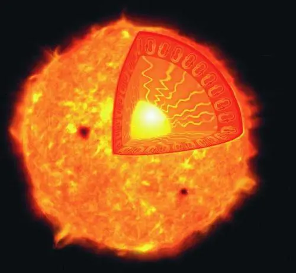
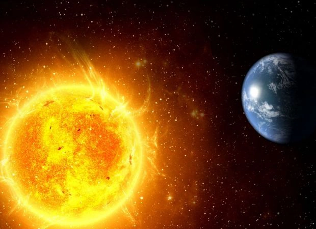
Descriere
O planetă este un corp astronomic care orbitează o stea sau o rămășiță stelară,
care este suficient de masivă pentru a fi rotunjită de propria sa gravitație,
nu este suficient de masivă pentru a provoca fuziunea termonucleară și și-a curățat regiunea vecină de
planetezimale.
Termenul de planetă este vechi, având legături cu istoria, astrologia, știința,
mitologia și religia. Cinci planete din Sistemul Solar sunt vizibile cu ochiul liber.
În multe culturi timpurii, acestea erau considerate zeițe. Pe măsură ce cunoștințele științifice
avansau,
percepția umană asupra planetelor s-a schimbat, încorporând o serie de obiecte disparate. În 2006,
Uniunea
Astronomică Internațională (IAU) a adoptat oficial o rezoluție care definește planetele din Sistemul
Solar. Această definiție este controversată, deoarece exclude multe obiecte ale masei planetare în
funcție de
unde sau ce orbitează
Formarea planetelor
Despre planetele diferite din Sistemul Solar se crede ca s-au format din nebuloasa solară,
un nor în formă de disc format din gaze și praf rămase de la formarea Soarelui.
Metoda acceptată în momentul actual prin care planetele s-au format este cunoscut sub numele de acreție,
în care planetele au început sub formă de boabe de praf pe orbită în jurul protostelei centrale.
Prin contact direct, aceste boabe s-au format în pâlcuri de până la 200 metri în diametru, care,
la rândul său, s-au ciocnit pentru a forma corpuri mai mari, (planetezimale), de ≈10 km în diametru.
Acestea au crescut treptat în continuare, prin coliziuni, cu câțiva centimetri pe an pe parcursul
următoarelor
câteva milioane de ani.
Particulele mici de praf s-au atras, datorită forțelor electrostatice, formând granule de până la 1–2
cm.
Peste această limită nu mai acționează forțele electrostatice. Granulele de 1–2 cm au continuat să
crească,
prin alipire, grație forței gravitaționale, ajungând în timp la dimensiunea unor planetezimale.
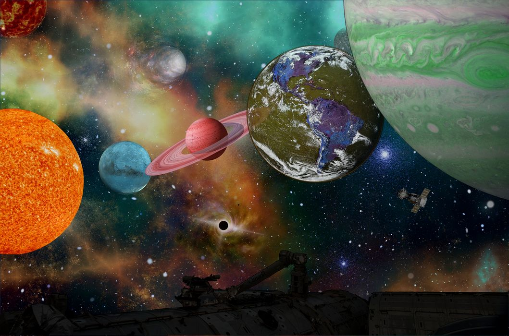
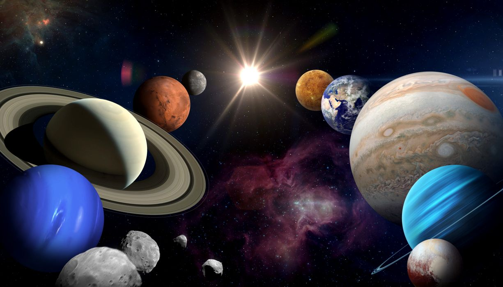
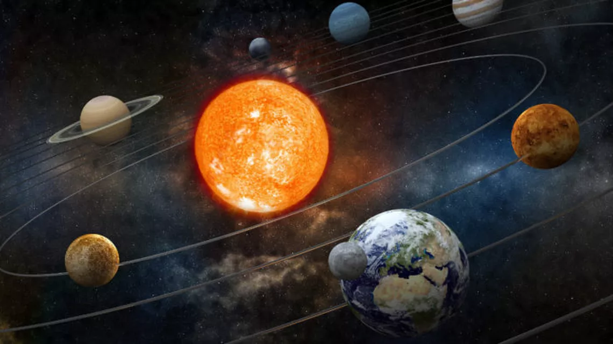
Corpuri mai mici
Printre corpurile mai mici ale Sistemului Solar sunt asteroizii,
meteoriții, cometele, praful, centura Kuiper, etc.
Mediul interplanetar
În afară de lumină, Soarele radiază un flux continuu de particule încărcate (plasma), numit
vânt solar. Acest flux se disipează cu o viteză de 1,5 milioane km/h, creând astfel heliosfera, o
atmosferă subțire care înconjoară Sistemul solar de la o distanță de cca. 100 ua (marcând
heliopauza). Materia care formează heliosfera se numește mediu interplanetar. Ciclul solar de
11 ani, precum și frecventele explozii solare și fluxuri coronale de masă, perturb heliosfera și
creează un spațiu specific. Rotația câmpului magnetic solar acționează asupra mediului
interplanetar, creând stratul de curent heliosferic, care este cea mai mare structură a
Sistemului solar.
Câmpul magnetic terestru protejează atmosfera de vântul solar. Interacțiunea dintre vântul
solar și câmpul magnetic terestru aduce aurora polar.
Heliosfera asigură o protecție parțială a Sistemului solar de razele cosmice, care este mai mare
la planetele cu câmp magnetic.Mediul interplanetar găzduiește cel puțin două regiuni de praf cosmic sub
formă de disc.
Primul, norul de praf zodiacal, este în Sistemul solar interior și produce lumina zodiacală.
Este, probabil, format printr-o coliziune în centura de asteroizi cauzată de interacțiunile cu
planetele. Al doilea se extinde între 10 și 40 ua și a fost creat, probabil, în timpul ciocnirilor
similare în centura Kuiper.

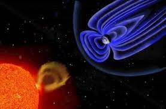
Centura de asteroizi
Centura de asteroizi conține mii, chiar milioane de corpuri cu un diametru de peste un
kilometru. Cu toate acestea, masa totală a centurii este de doar 4% din masa Lunii.
Asteroizii sunt, în principal, corpuri mici din Sistemul solar, formate din roci și minerale
metalice nonvolatile. Centura de asteroizi orbitează în general între Marte și Jupiter, la o
distanță de 2,3 până la 3,3 ua de Soare. Centura de asteroizi s-a format din nebuloasa solară
primordială ca un grup de precursori mai mici de planete. Aceste ―planetezimale‖ au fost prea
puternic perturbate de gravitația lui Jupiter pentru a forma o planetă
Asteroizii variază între câteva sute de kilometri până la praf microscopic. Toţi, cu excepția
celui mai mare, Ceres, sunt consideraţi corpuri mici. Câțiva dintre ceilalți asteroizi de mari
dimensiuni, cum ar fi Vesta și Hygeia sunt, de asemenea, consideraţi în continuare corpuri
mici, aceştia ar putea fi clasificaţi ca planete pitice la un moment dat, în cazul în care în viitor
se poate stabili că au ajuns la echilibru hidrostatic.
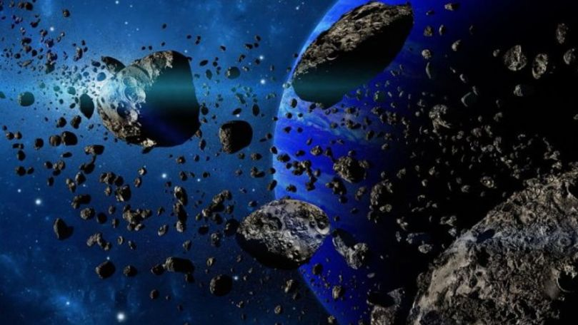

Meteoritii
Meteoriții sunt obiecte de proveniență Spatiala ajunse pe suprafața
Pământului ca urmare a arderii incomplete în atmosferă a meteoroizilor
(bucăți de diverse dimensiuni de fier și rocă, rezultate în special în urma coliziunii dintre
asteroizi).
Unii meteoroizi (din a căror ardere incompletă provin meteoriții)
s-au putut forma și în urma dezintegrării cometelor în fragmente.
Fenomenul luminos provocat de căderea prin atmosferă a unui corp solid de dimensiuni mici
se numește meteor (A nu se confunda cu meteorism!). Fragmentele de cometă pot avea o energie
de ciocnire asemănătoare cu cea a fragmentelor de asteroizi, dar zboară cu o viteză mult mai
mare și sunt mult mai mici. Din această cauză pe Pământ încă nu au fost găsite resturi de
comete, ci numai resturi de asteroizi.
Există trei mari categorii de meteoriți:
⊳meteoriți pietroși, sau „aerolitici”, care sunt cei mai comuni și sunt formați din piroxen,
olivină și plagioclazi, minerale silicioase și o oarecare cantitate de nichel-fier.
Aceștia se subdivid în chondrite și achondrite.
⊳meteoriți feroși, sau „siderolitici”, care sunt compuși în cea mai mare parte din aliaje
nichel-fier.
⊳meteoriți micști, sau „pietroși-feroși”, ca de exemplu pallasitele, sunt rari și
conțin amestecuri de silicați și aliaj nichel-fier.
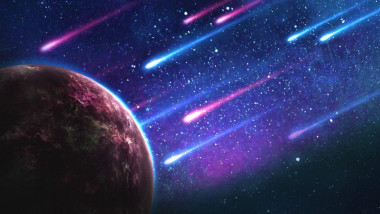
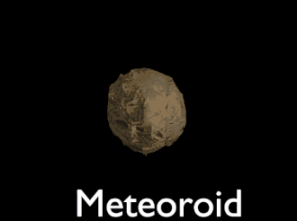
Cometele
Cometele sunt corpuri mici din Sistemul solar. Cu diametre de ordinul kilometrilor, cometele
sunt în general alcătuite din gheață volatilă. Ele au orbite foarte excentrice, cu periheliul
situat, uneori, în interiorul Sistemului solar, în timp ce afeliul este dincolo de Pluto. Când o
cometă intră în interiorul Sistemului solar, apropierea sa de Soare duce la sublimarea și
ionizarea de la suprafața sa, creând o coadă: o dâră lung a format a din gaz și praf.
Comete de perioadă scurtă de timp (de exemplu, cometa Halley) îşi completează orbitele lor
în mai puțin de 200 de ani și par să provină din centura Kuiper. Comete cu perioadă lungă de
timp (de exemplu, Hale-Bopp) au o periodicitate de câteva mii de ani și par să provină din
Norul Oort. Există şi comete care au o traiectorie hiperbolică, sugerând ca acestea ar putea
evada în cele din urmă din Sistemul solar. Cometele bătrâne au pierdut cea mai mare parte a
componentelor volatile și sunt adesea luate în considerare astăzi ca asteroizi.
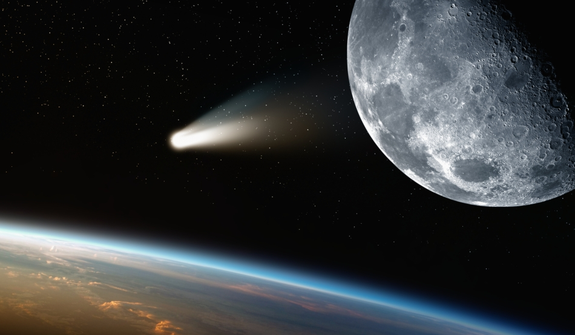
Centura Kuiper
Centura Kuiper este un inel mare, format din resturi aparținând unui inel mare de rămăşiţe,
similar cu centura de asteroizi, dar compus în principal din gheață. Prima parte a centurii
Kuiper se extinde între 30 și 50 ua de Soare și se oprește la "marginea lui Kuiper", de aici
începe a doua parte a centurii de la 100 ua. Această regiune este considerată a fi sursa de unde
vin cometele.Aceasta este alcătuită în principal din corpuri mici, precum și unele destul de mari, cum
ar fi
Quaoar, Varuna sau Orcus, care ar putea fi clasificate ca planete pitice.
Centauri, situate între 9 și 30 ua, sunt corpuri de gheață similare cometelor, care orbitează
între Jupiter și Neptun. Cea mai mare dintre acestea, Chariklo, are un diametru cuprins între
200 și 250 km. Primul Centaur descoperit, Chiron, a fost considerat la început a fi o cometă,
deoarece a dezvoltat o coadă de cometă. Unii astronomi clasifică centaurii ca fiind corpuri din
centura Kuiper.
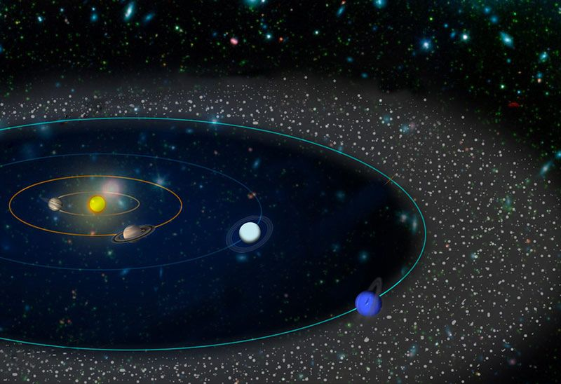
Gaură neagră
O gaură neagră este o regiune în spațiu-timp cu o forță gravitațională atât de mare
încât nimic — nici măcar particulele și radiația electromagnetică ca lumina — nu poate
scăpa odată intrat în ea. Teoria relativității generale prezice că o masă suficient de
compactă poate deforma spațiul și timpul astfel încât să formeze o gaură neagră.
Limitele unei astfel de regiuni din care nimic nu poate scăpa este numită orizontul
evenimentelor. Chiar dacă orizontul evenimentelor are un efect enorm asupra sorții
și circumstanțele unui obiect care trece prin aceasta, nicio caracteristică aparentă
nu poate fi observată. În multe moduri o gaură neagră se comportă ca un corp negru
ideal, deoarece nu reflectă lumină deloc. Mai mult, teoria câmpului cuantic
în spațiu-timp curbat prezice un orizont al evenimentelor invers proporțional masei
acestuia. Temperatura este de ordinul miliardelor de grade Celsius în cazul găurilor
negre de masă stelară, făcându-le, esențial, imposibil de observat.
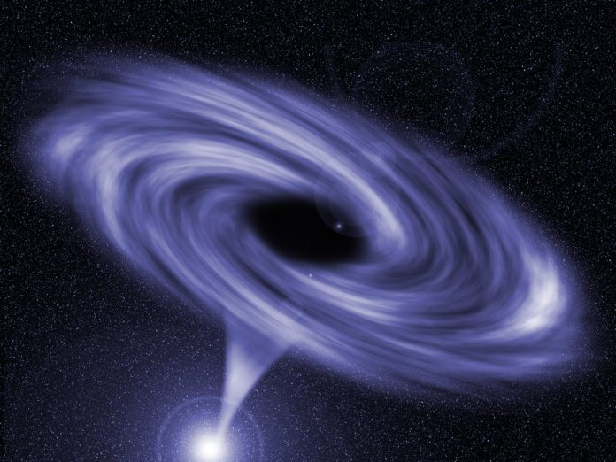